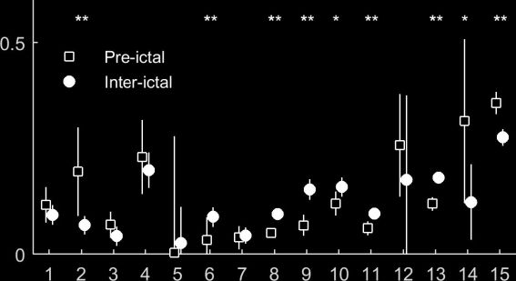

Here we analyse spontaneous epileptic "spikes" recorded in 15 epilepsy patients. Data were acquired from implanted electrodes during a clinical trial (see here for details). Recording was continuous over 6 months - 3 years. Spike detection was automated using a template matching algorithm.
Epileptic spikes can be detected using EEG and are thought to be due to large populations of neurons firing in sync. Healthy brains also show spike activity, but patients with epilepsy have far more frequent spike events. It is not clear if there is a direct link between spikes and seizures. Here we report on patterns of seizures and spikes, their relationship to each other, and the evidence of circadian rhythms.
Three patients showed a significant preseizure increase in spike rate, six patients showed a significant decrease, and no significant change was found in the remaining six patients.
Comparison in spike rate between interictal and pre seizure times. The x axis indicates different subjects and the y axis is a normalized spike rate
Seizures and spikes showed clear circadian rhythms that were highly patient specific. Importantly there were times when seizures were extremely unlikely
Circadian patterns of seizures
Usually times of high spike and seizure likelihood were aligned for an individual. Alignment indicates a common factor regulating spikes and seizures (see plot below)
This is an interactive plot to visualize average hourly spike rate and seizure rate over 24 hours. The rate is normalized to a range from 0% (minimum rate) to 100% (maximum rate) for each patient.
The circle segments represent 1 hour (there are 24 segments) and each ring is a different patient (there are 15 rings in total). The rings can also be viewed individually.
My data won't fit on your screen!
Plot patients:
Spikes
Seizures
Spikes and seizures have a complex, patient-specific relationship
Our findings show that spikes are neither exclusively protective or provocative. We also show that spikes and seizures are linked and are part of a larger continuum of epileptic events.
A major problem treating epilepsy is the intermittent nature of seizures, making it difficult to refine therapies. The circadian patterns and interrelationship between spikes and seizures that we have identified provide new treatment strategies for epilepsy. Understanding times of high and low seizure and spike likelihood could improve patient management, providing a means to titrate therapies, to forecast seizures and monitor new treatments.
Our study highlight a need for devices that can perform chronic and continuous monitoring of neural signals in order to better manage epilepsy